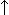
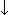

Enterprise Objects Framework Release 1.1 Copyright ©1995 by NeXT Computer, Inc. All Rights Reserved.
| NXTableView |
| Inherits From: | ScrollView : View : Responder : Object | |
| Declared In: | eointerface/NXTableView.h |
| Class Description |
| An NXTableView displays data in a scrolling table of fields. It's similar to a Matrix, but with two important differences. First, the data resides not in the NXTableView instance but in an external source. Second, the table's rows and columns can be individually resized and repositioned by the user.
An NXTableView object consists of up to three different views: a row title (or header) view, a column title view, and a data view. The data view can be made scrollable horizontally, vertically, or both. The row and column title views display titles in tabs that the user can select and rearrange; the titles automatically scroll with their contents. Either or both of the title views may be hidden. Note: All three of these component views are private to the NXTableView.
Rows and Columns; the Data Source Although the appearance of the NXTableView is completely configurable, the usual arrangement is to have a fixed number of properties displayed in the columns. In this configuration columns are said to be on the table's static axis. The rows, representing records, vary dynamically with the data source, so rows are said to be on the table's dynamic axis. Usually such an NXTableView has column titles but no row titles. If you ask for titles on a dynamic axis, the display shows consecutive integers, reporting the record's index in the data source. When a new NXTableView is initialized, it has no rows and no columns, and neither rows nor columns are static. Sending it an addColumn:withTitle: message both adds a column and makes columns static. Similarly, sending it an addRow:... message makes rows static. A few applications may want to have both rows and columns static. In the common case (that is, static columns, dynamic rows), you send addColumn:... for each column, and then set a data source to provide the data. Values for the rows are then retrieved lazily at display time through the data source's getValueFor:at:into: method. Somewhat like a very lazy browser, the NXTableView doesn't cache data at all. There are two ways to refer to a static vector (a row or column in the table): by its row or column index, or by an identifier for the property that it represents. Identifiers are used by the data source as described in the NXTableDataSources informal protocol specification. You typically refer to an individual field in an NXTableView by row and column index, or by identifier for the static axis and index within the dynamic axis. For example, if an NXBrowser has columns identified by the strings "name", "street", and "city", you can ask its data source for the street of the 12threcord as the value at 11, 1 (the index of "street" in the three columns) or by specifying the identifier "street" and the index 11.
Formatting To format the display of its content view, an NXTableView uses subclasses of the abstract superclass NXFormatter (see the specifications of NXFormatter, NXTextFormatter, NXEditableFormatter, and NXImageFormatter for details). By using formatters an NXTableView has an open-ended set of possible field types: static or editable text, images, and so on. A formatter is responsible for getting the data for a particular field within the NXTableView's grid and displaying it at the appropriate place on the screen. A field is conceptually like a Cell in a Matrix; however, the objects that draw and edits fields are transient, and are reused to display many different fields. This is why an NXTableView doesn't store data, but always gets it from the data source. A formatter is shared along a static axis, since the formatting of the fields for that axis is the same. For example, the values for the "city" column previously mentioned are all displayed in the same font, with the same alignment, and so on. The object that holds a formatter and applies it to a column or row is called a vector object, and conforms to the NXTableVectors protocol. A vector object also holds the identifier used by the data source to specify the property displayed. NXTableView always uses NXTableVector objects for its vectors.
Notifications to Other Objects Although NXTableView is not a subclass of Control, it does implement the target/action paradigm, and allows you to set the target and the action in Interface Builder's Connection Inspector. An NXTableView sends its action message to its target whenever the user clicks on the view or presses an arrow key to change the selection. An NXTableView also allows you to register an action sent on a double-click, allowing the target to be notified that the user is attempting to edit a field. An NXTableView also accepts a delegate and notifies it when rows or columns are rearranged and when the selection changes. The delegate methods are described at the end of this specification under "Methods Implemented by the Delegate." Since an NXTableView's data source is often interested when its selection changes, an NXTableView also sends it data source the notification message indicating that the selection has changed. |
| Instance Variables |
| id delegate;
id dataSource; id rowLayout; id columnLayout; id rowHeading; id columnHeading; id rowsClip; id columnsClip; id gridView; id rowSel; id columnSel; id cornerView; id target; SEL action; SEL doubleAction; |
| delegate | The object that's notified of various changes in the table view. | |
| dataSource | The object providing the data that the table view displays. | |
| rowLayout | Row layout information (private). | |
| columnLayout | Column layout information (private). | |
| rowHeading | Heading of the selected row (private). | |
| columnHeading | Heading of the selected column (private). | |
| rowsClip | The ClipView for the row headings, or "title tabs" (private). | |
| columnsClip | The ClipView for the column headings, or "title tabs" (private). | |
| gridView | The document view of the NXTableView, as defined by the ScrollView class of the Application Kit (private). | |
| rowSel | An object identifying the selected rows (private). | |
| columnSel | An object identifying the selected columns (private). | |
| cornerView | A View used to draw in the empty upper left corner of the NXTableView (private). | |
| target | The object that the NXTableView sends action messages to. | |
| action | The message that the NXTableView sends to its target on a single click. | |
| doubleAction | The message that the NXTableView sends to its target on a double click. |
| Method Types |
| Initializing and freeing |
| Setting up the NXTableView |
| Setting and reporting formatting |
| Notifying the NXTableView of a change |
| Handling rows and columns |
| Editing support |
| Handling the selection |
| Setting NXTableView components |
| Adjusting the view |
| Transmitting action |
| Archiving |
| Appointing a delegate |
| Instance Methods |
| acceptArrowKeys: |
| Sets according to flag whether or not the NXTableView allows the user to press arrow keys to change the selected row or column. The default is YES. Returns self.
When at least one row is selected,  moves the selection to the row above the highest selected row, and  to the row below it (if necessary, scrolling to make the newly selected row visible); the horizontal arrow keys do nothing. Similarly, when at least one column is selected, moves the selection to the column to the left of the left-most selected column, and to the column to the right of it (again scrolling as needed); the vertical arrow keys do nothing. In either case, arrow keys don't the selection to wrap around; if the selection is the first or last vector, pressing the arrow key that points toward the edge does nothing. See also: |
| acceptsFirstResponder |
| Returns YES if the NXTableView accepts arrow keys, NO otherwise.
See also: |
| action |
| Returns the action method sent to the NXTableView's target when a mouse-up or key-down event occurs in the NXTableView.
See also: |
| addColumn:at: |
| Inserts columnVector, an NXTableVector, as a static column into the NXTableView at columnIndex. Adding a column makes all columns static. Returns self.
See also: |
| addColumn:withFormatter:andTitle:at: |
| withFormatter:aFormatter andTitle:(const char *)title at:(unsigned int)columnIndex |
| Creates a new static column vector and inserts it into the NXTableView at columnIndex by invoking addColumn:at:. The data for the new column is provided by the data source from its property for columnIdentifier. The column's title is set to title, and its formatter is set to aFormatter (an NXFormatter). If aFormatter is nil, the column vector will use a shared NXTextFormatter or NXEditableFormatter as needed. Returns self.
See the NXTableDataSources informal protocol specification for information on identifiers. See also: |
| addColumn:withTitle: |
| Appends a new static column vector after the last column in the NXTableView by invoking addColumn:withFormatter:andTitle:at: with columnIdentifier and title, and with nil as the formatter. Returns self. |
| addRow:at: |
| Inserts rowVector, an NXTableVector, as a static column into the NXTableView at rowIndex. Adding a row makes all rows static. Returns self.
See also: |
| addRow:withFormatter:andTitle:at: |
| withFormatter:aFormatter andTitle:(const char *)title at:(unsigned int)rowIndex |
| Creates a new static row vector and inserts it into the NXTableView at rowIndex by invoking addRow:at:. The data for the new row is provided by the data source from its property for rowIdentifier. The row's title is set to title, and its formatter is set to aFormatter (an NXFormatter). If aFormatter is nil, the row vector will use a shared NXTextFormatter or NXEditableFormatter as needed. Returns self.
See the NXTableDataSources informal protocol specification for information on identifiers. |
| addRow:withTitle: |
| Appends a new static row vector after the last column in the NXTableView by invoking addRow:withFormatter:andTitle:at: with rowIdentifier and title, and with nil as the formatter. Returns self. |
| allowEmptySel: |
| Sets according to flag whether the NXTableView allows an empty selection (a user deselects a single selected item by Shift-clicking on it). The default is NO. Returns self.
See also: |
| allowVectorReordering: |
| Sets according to flag whether the user can drag title tabs to reorder rows or columns (it isn't possible to drag a row or column without a title). The default is YES. Returns self.
See also: |
| allowVectorResizing: |
| Sets according to flag whether the user can resize a static vector by dragging the edge of its title tab (it isn't possible to resize a row or column without a title). The default is YES. Returns self.
See also: |
| columnAt: |
| Returns the table vector that controls the formatting of the static column at columnIndex. |
| columnCount |
| For an NXTableView with static columns, returns the number of columns. For a table view whose columns are dynamic, sends columnCount the data source and returns the result.
See also: |
| columnList |
| Returns a List of the table view's column vectors, ordered as they're displayed, or nil is columns are dynamic.
See also: |
| columnsChangedFrom:to: |
| Informs the NXTableView that its data source has changed values for columns from startIndex to endIndex, causing it to redisplay. Returns self. |
| dataSource |
| Returns the object that provides the data displayed by the NXTableView. See the NXTableDataSources informal protocol specification for more information. |
| delegate |
| Returns the NXTableView's delegate. The delegate is notified when the NXTableView reorders columns or rows, or changes its selection. |
| deselectAll: |
| If empty selection is permitted and if the delegate responds YES to tableViewWillChangeSelection:, deselects all vectors and their headings (title tabs). If empty selection isn't permitted, deselects all but the first selected vector; if the delegate refuses, does nothing. Notifies the delegate and the data source if the selection does change by sending a tableViewDidChangeSelection: message, and sends the action message to the NXTableView's target. Returns self.
See also: |
| deselectColumn: |
| Deselects the column at columnIndex, or if that's only selected column and empty selection isn't allowed, does nothing. Returns self.
See also: |
| deselectRow: |
| Deselects the row at rowIndex, or if that's only selected row and empty selection isn't allowed, does nothing. Returns self.
See also: |
| doesAcceptArrowKeys |
| Returns YES if the NXTableView accepts arrow key presses to change the selection, NO otherwise. The default is YES.
See also: |
| doesAllowEmptySel |
| Returns YES if the NXTableView allows zero vectors to be selected, NO otherwise. The default is YES.
See also: |
| doesAllowVectorReordering |
| Returns YES if the NXTableView allows the user to rearrange vectors by dragging their title tabs, NO otherwise (it isn't possible to drag a row or column without a title). The default is YES. You can rearrange vectors programmatically regardless of this setting.
See also: |
| doesAllowVectorResizing |
| Returns YES if the NXTableView allows the user to resize a static vector by dragging their title tabs, NO otherwise (it isn't possible to resize a row or column without a title). The default is YES.
See also: |
| doubleAction |
| Returns the message sent to the target when the user double-clicks in the NXTableView. If editing is enabled, this message is sent just before the NXTableView begins editing the field clicked. |
| drawSelf:: |
| Redraws the NXTableView. Your application shouldn't need to call this method directly. Returns self.
See also: |
| dynamicColumns |
| Returns YES if the NXTableView's columns are dynamic; that is, if they correspond to records in the data source. Returns NO if the columns are static, representing attributes for all rows. |
| dynamicRows |
| Returns YES if the NXTableView's rows are dynamic; that is, if they correspond to records in the data source. Returns NO if the rows are static, representing attributes for all columns. |
| editFieldAt:: |
| Selects the field at rowIndex and columnIndex and has the formatter for that field begin editing. This achieves programmatically the effect the user can produce by double-clicking a field in the NXTableView's content view. Returns self.
If the NXTableView isn't editable or if the delegate responds NO to tableViewWillChangeSelection:, does nothing. If editing can begin, checks to see that the formatter for the indicated field responds to editFieldAt::inside:inView:withAttributes::usePositions::. If it doesn't respond, the NXTableView aborts; if it does, the NXTableView sends the message (this doesn't mean the formatter will actually edit the field). See the description for editFieldAt::... in NXEditableFormatter for more information. |
| endEditing |
| Ends any editing and redraws the field that was being edited. Returns self. |
| finishUnarchiving |
| Invoked as the last step in reading an NXTableView from an archive, to set up determinable state not archived. This method is invoked automatically as part of the process of reading from an archive. Returns self. |
| formatterAt:: |
| Returns the NXFormatter responsible for the field at rowIndex and columnIndex. A static row or column, uses a single formatter for every field in the axis. If a row or column has no formatter, a default formatter, shared among columns and rows, is created if needed and returned.
You may want to override this method in order to apply different formatting rules. |
| free |
| Frees the storage used by the NXTableView and returns nil. |
| getIntercell: |
| Copies the vertical and horizontal spacing between fields into theSize. The default is 2.0, 2.0. Returns self. |
| initFrame: |
| Initializes a newly allocated NXTableView with boundaries specified by frameRect. The new NXTableView has no rows or columns, and both axes are considered dynamic until a column or row is added. The new NXTableView also has column headings but not row headings and vertical scroll bars but not horizontal ones. Returns self.
See also: |
| isColumnHeadingVisible |
| Returns YES if the column-heading view (containing the title tabs for all columns) is displayed, NO otherwise. |
| isColumnSelected: |
| Returns YES if the column at columnIndex is selected, NO otherwise. |
| isEditable |
| Returns YES if the NXTableView is editable, NO otherwise.
See also: |
| isGridVisible |
| Returns YES if the NXTableView draws grid lines around fields, NO if it doesn't. The default is NO. |
| isHorizScrollerVisible |
| Returns YES if the horizontal scroller is displayed, NO if it isn't. The default is NO.
See also: |
| isRowHeadingVisible |
| Returns YES if the row-heading view (containing the title tabs for all rows) is displayed, NO if it isn't. |
| isRowSelected: |
| Returns YES if the row at rowIndex is selected, NO otherwise. |
| isVertScrollerVisible |
| Returns YES if the vertical scroller is displayed, NO if it isn't. The default is YES.
See also: |
| layoutChanged: |
| Recalculates the position and size of the NXTableView's components. Returns self. |
| mode |
| Returns the selection mode, which may be NX_RADIOMODE, NX_LISTMODE, or NX_NOSELECT. See the description of setMode: for more information. |
| moveColumnFrom:to: |
| Moves the static column and heading at oldIndex to newIndex (that is, in the new sequence, it will precede the column that used to be at newIndex). Returns YES if the move succeeds, NO otherwise. Dynamic columns can't be moved.
This method invokes the delegate method tableView:movedColumnFrom:to:. |
| moveRowFrom:to: |
| Moves the static row and heading at oldIndex to newIndex (that is, in the new sequence, it will precede the row that used to be at newIndex). Returns YES if the move succeeds, NO otherwise. Dynamic rows can't be moved.
This method invokes the delegate method tableView:movedRowFrom:to:. |
| read: |
| Reads the NXTableView object from the type stream stream. Returns self.
See also: |
| reloadData: |
| Deselects all rows and columns, recalculates the NXTableView's layout, and redisplays its data (which is always retrieved from the data source as its displayed). Returns self. |
| removeColumnAt: |
| Deletes the static column and heading at columnIndex. Returns self. |
| removeRowAt: |
| Deletes the static row and heading at rowIndex. Returns self. |
| rowAt: |
| Returns the table vector that controls the formatting of the static row at rowIndex. |
| rowCount |
| For an NXTableView with static rows, returns the number of rows. For a table view whose rows are dynamic, sends rowCount the data source and returns the result.
See also: |
| rowHeight |
| Returns the default row height.
See also: |
| rowList |
| Returns a List of the table view's row vectors, ordered as they're displayed, or nil is rows are dynamic.
See also: |
| rowsChangedFrom:to: |
| Informs the NXTableView that its data source has changed values for rows from startIndex to endIndex, causing it to redisplay. Returns self. |
| scrollClip:to: |
| Changes aClipView's bounds rectangle origin to newOrigin, resulting in the document view being scrolled. This message is usually sent automatically during scrolling. It's used to coordinate the scrolling of the content view and the two heading views. Returns self. |
| scrollColumnToVisible: |
| Scrolls the document view and column headings horizontally so that column at columnIndex is visible. Returns self. |
| scrollRowToVisible: |
| Scrolls the document view and column headings horizontally so that column at rowIndex is visible. Returns self. |
| selectAll: |
| If the NXTableView's selection mode is NX_LISTMODE, selects all rows and columns and their headings. Notifies the delegate and the data source with tableViewDidChangeSelection:. Returns self.
See also: |
| selectColumn:byExtension: |
| Selects the column and heading identified by columnIndex. If flag is YES and the NXTableView's selection mode is NX_LISTMODE, includes columnIndex in the set of selected columns. Otherwise, this method deselects other columns. Returns self.
See also: |
| selectedColumn |
| Returns the index of the selected column, or |
| selectedColumnAfter: |
| Returns the index of the first selected column further to the right than columnIndex. If columnIndex is NX_NoIndex and at least one selected column is selected, returns the first selected column. If no column is selected or if there's no selected column to the right of columnIndex, returns NX_NoIndex. |
| selectedColumnCount |
| Returns the number of selected columns. |
| selectedRow |
| Returns the index of the selected row, or |
| selectRow:byExtension: |
| Selects the row and heading identified by rowIndex. If flag is YES and the NXTableView's selection mode is NX_LISTMODE, includes rowIndex in the set of selected rows. Otherwise, this method deselects other rows. Returns self.
See also: |
| selectedRowAfter: |
| Returns the index of the first selected row further to the right than rowIndex. If rowIndex is NX_NoIndex and at least one selected row is selected, returns the first selected row. If no row is selected or if there's no selected row to the right of rowIndex, returns NX_NoIndex. |
| selectedRowCount |
| Returns the number of selected rows. |
| sendAction:to:forSelectedColumns: |
| to:anObject forSelectedColumns:(BOOL)flag |
| Sends anAction to anObject once for each column (if flag is NO) or once for each selected column (if flag is YES). Returns self. |
| sendAction:to:forSelectedRows: |
| to:anObject forSelectedRows:(BOOL)flag |
| Sends anAction to anObject once for each row (if flag is NO) or once for each selected row (if flag is YES). Returns self. |
| setAction: |
| Sets to aSelector the action method sent to the NXTableView's target when a mouse-up or key-down event occurs in the NXTableView.
See also: |
| setColumnHeadingVisible: |
| Sets according to flag whether the NXTableView displays column headings (title tabs). If flag is YES and the NXTableView doesn't have a column heading view, creates one. If the setting changes, the NXTableView retiles and redisplays itself. Returns self. |
| setColumnSelectionOn::to: |
| :(unsigned int)endIndex to:(BOOL)flag |
| Selects or deselects according to flag the columns from startIndex to endIndex, inclusive. Does nothing if the NXTableView's selection mode is NX_RADIOMODE and the given indexes specify more than one column. Returns self.
See also: |
| setDataSource: |
| Makes anObject the data source from which the NXTableView gets its values, and redisplays the table. Returns self. |
| setDelegate: |
| Sets the NXTableView's delegate to anObject. Returns self. |
| setDoubleAction: |
| Sets to aSelector the message sent to the target when the user double-clicks in the NXTableView. If editing is enabled, this message is sent just before the NXTableView begins editing the field clicked. |
| setEditable: |
| Sets according to flag whether the user can edit fields in the NXTableView. The default is YES. Returns self. |
| setGridVisible: |
| Sets according to flag whether the NXTableView draws grid lines around fields. The space used for the grid lines is in addition to the intercell spacing. The default is NO. Returns self.
See also: |
| setHorizScrollerRequired: |
| Adds or removes a horizontal scroller for the NXTableView according to flag, as described for the ScrollView class of the Application Kit. Also recalculates the layout of the NXTableView and redisplays its data. Returns self.
See also: |
| setIntercell: |
| Sets the width and height between fields to those in aSize and redisplays the NXTableView. When grid lines are used, the space they use is in addition to the intercell spacing. Returns self.
See also: |
| setMode: |
| Sets the NXTableView's selection mode to aMode and returns self. Possible values for aMode and their meanings are: |
| Value | Meaning | |
| NX_LISTMODE | Shift-clicking a vector adds it to the current selection if it isn't already selected, or removes it if it is (subject to restrictions on empty selection). | |
| NX_RADIOMODE | Selecting a vector automatically deselects any other selected vector. | |
| NX_NOSELECT | Selection is disallowed. |
| setRowHeadingVisible: |
| Sets according to flag whether the NXTableView displays row headings (title tabs). If flag is YES and the NXTableView doesn't have a row heading view, creates one. If the setting changes, the NXTableView retiles and redisplays itself. Returns self. |
| setRowHeight: |
| Sets the row height.
See also: |
| setRowSelectionOn::to: |
| :(unsigned int)endIndex to:(BOOL)flag |
| Selects or deselects according to flag the rows from startIndex to endIndex, inclusive. Does nothing if the NXTableView's selection mode is NX_RADIOMODE and the given indexes specify more than one row. Returns self.
See also: |
| setTarget: |
| Sets the NXTableView's target to anObject and returns self. The NXTableView sends its action message to the target when a mouse-up or key-down event occurs in the NXTableView.
See also: |
| setVertScrollerRequired: |
| Adds or removes a vertical scroller for the NXTableView according to flag, as described for the ScrollView class of the Application Kit. Also recalculates the layout of the NXTableView and redisplays its data. Returns self.
See also: |
| sizeTo:: |
| Resizes the NXTableView to width and height, recomputes its layout, and redisplays it. Returns self. |
| target |
| Returns the NXTableView's target. The NXTableView sends its action message to the target when a mouse-up or key-down event occurs in the NXTableView.
See also: |
| tile |
| Arranges the NXTableView's three component views (content, column heading, and row heading--or as many of them as are visible) within the NXTableView's frame. Doesn't display the NXTableView. Returns self. |
| write: |
| Writes the NXTableView object to the typed stream stream. Returns self. |
| Methods Implemented by the Delegate |
| tableView:movedColumnFrom:to: |
| movedColumnFrom:(unsigned int)oldIndex to:(unsigned int)newIndex |
| Invoked when the user changes the position of a static column. The delegate can use this information to change the display, for example, by sorting the rows based on the values in the first column. Returns self. |
| tableView:movedRowFrom:to: |
| movedRowFrom:(unsigned int)oldIndex to:(unsigned int)newIndex |
| Invoked when the user changes the position of a static row. The delegate can use this information to change the display, for example, by sorting the columns based on the values in the first row. Returns self. |
| tableViewDidChangeSelection: |
| Sent to the delegate and to the data source when the user has changed the selection. The delegate or data source can use this information to update other information or displays. Returns self. |
| tableViewWillChangeSelection: |
| Sent to the delegate just before the selection will be changed. If the delegate returns YES the selection is changed; if the delegate returns NO the change is aborted. |